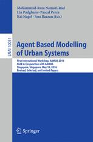

For the current/upcoming edition please visit https://abmus.github.io/.
About
The ABMUS2017 workshop on Agent-based modelling of urban systems was held at the AAMAS2017 conference in Sao Paulo, Brazil on the 8th of May 2017. It was the follow-up of ABMUS2016 held in Singapore during AAMAS2016 on the 10th of May 2016 (the proceedings of the previous workshop are available now).
The following accepted papers were presented during the workshop:
Theme 1: Population
- Bhagya N. Wickramasinghe, Dhirendra Singh and Lin Padgham: Heuristic Data Merging for Constructing Initial Agent Populations
- Bernardo Alves Furtado and Isaque Daniel Rocha Eberhardt: An applied spatial agent-based model of administrative boundaries using SEAL
- Samarth Swarup, Julia Gohlke and James Bohland: A Multi-agent Model of Population Heat Exposure
- Eric Silverman, Fred Charles, Julie Porteous, Ian Wood and Louisa Ells: Agent-Based Virtual Urban Environments for Population Health Applications
Theme 2: Mobility
- Guni Sharon and Peter Stone: A Protocol for Mixed Autonomous and Human-Operated Vehicles at Intersections (best paper award)
- Nam Huynh, Johan Barthelemy and Pascal Perez: Enabling Crowd Simulations To Handle Ripple Effects Across Transport Networks
- Fatema T. Johora, Philipp Kraus and Jörg P. Müller: Dynamic Path Planning and Movement Control in Pedestrian Simulation
- Sergio Arturo Ordonez Medina: Scheduling weekly flexible activities in a large-scale multi-agent mobility simulator
Theme 3: City complexity
- Vinicius Neto, Joao Meirelles and Fabiano Ribeiro: Social entropy and the city: a unidimensional model
- Robert Tanton, Christopher Pettit and Pascal Perez: A framework for integrating collaborative city design with individual-centred modelling
- Stefano Picascia, Ali Termos and Neil Yorke-Smith: Data-Driven Agent-Based Simulation: A Case Study of West Asian Urban Dynamics
Theme 4: Collecting real data
- Maria Briola, Christoph Mazur and Koen H. van Dam: Agent-based modelling of urban residential heat demand in a district heating network
- Stefania Bandini, Luca Crociani, Giuseppe Vizzari, Flavio Soares Correa Da Silva and Andrea Gorrini: The Role of Compliance in Heterogeneous Interacting Agents: Data from Observations
The central goal of ABMUS is to bring together the community of researchers and practitioners who use agent-based models and agent systems to understand and manage cities and urban infrastructure systems. Through the exchange of ideas and state-of-the-art within this area, we will pool together current thinking to discuss both the main avenues of fruitful research and the methodological challenges that we face in building robust and realistic models of urban systems.
An overarching theme for the workshop in 2017 was data for agent-based urban models, which is fundamental for all modelling activities and case studies and can be used to generate synthetic populations, calibrate geospatial and behavioural models and validate emerging phenomena. We discussed data collection and data management, and shared insights in valuable data sets that could perhaps be translated and re-used between sectors and countries. Foundation data sets or shared data structures could enable interoperability of agent-based models, with individual models representing a particular sector. Together, these could create insights for complex city systems.
Call for Papers
Researchers and practitioners who use agent-based models and agent systems to understand, explore, and manage cities and urban infrastructure systems are invited to submit papers to ABMUS2017. The overarching theme for the workshop is data for agent-based models. Data is essential for building, calibrating, and validating agent-based city and urban infrastructure models. But which approaches are optimal for what purposes? We invite presentations that describe data collection and data management approaches in agent-based models, as well as the use of data sets and methodologies that can be translated and re-used between researchers, sectors and countries.
Workshop topics include, but are not limited to, the following:
- Large scale urban simulation applications
- Agent-based modelling of urban transport, land-use, housing, energy, health, etc.
- Spatially explicit micro-simulation modelling
- Simulation of household behaviour and technology adoption
- Localized population synthesis
- Multi-scale urban systems (temporal and spatial)
- Social simulation of demographic transitions
- Use of mobile technology to validate activity patterns
- Techniques for integrating independently developed components
- Agent-based platforms for urban simulation
- Data structures for simulating urban environments
- (Multi-)agent systems for decision support in e.g. transport, energy use and air quality
- Connection of simulation models to social and geographical theory
- Development of 'master' city datasets for model validation
At the workshop each presenter will be given 10 minutes to introduce their paper and/or case study, followed by 5-10 minutes in which presenters will share their views on the data for agent-based models theme. After three presentations there will be 20-30 minutes of group discussion in which presenters will act as panel members.
For details on how to submit please see https://abmus.github.io/ and for more information please contact:
- Koen van Dam -- k.van-dam@imperial.ac.uk
- Jason Thompson -- jason.thompson@unimelb.edu.au
Submission and important dates
How to submit a paper
Participants are invited to submit a full paper (maximum 8 pages, not including references) describing their work on one or more of the topics relevant to the workshop. The submission should articulate the objectives of the paper and provide a brief but thorough description of the research related to the theme of the workshop. Alternatively, you can submit an extended abstract (max 4 pages) to report on work in progress or to make a short statement related to the workshop theme.
Authors are requested to prepare their papers by following the LNCS Springer instructions, preferably using the LaTeX template provided but a Word template is also available.
All papers must be submitted through the workshop's EasyChair page:
https://easychair.org/conferences/?conf=abmus2017.
Important dates
- 19 February 2017: extended deadline for paper submissions
- 15 March 2017: Notification of acceptance following the review process
- 29 March 2017: Deadline for submitting camera-ready papers (including LaTeX files)
- 31 March 2017: Early bird registration cut-off date
- 8-9 May 2017: ABMUS workshop at the AAMAS2017 conference in Sao Paulo, Brazil
Organisation
The organising committee consists of
- Dr Koen H. van Dam, Imperial College London
- Dr Jason Thompson, University of Melbourne
- Prof Pascal Perez, University of Wollongong
- Dr Nick Malleson, University of Leeds
- Dr Alison Heppenstall, University of Leeds
- Dr Andrew T. Crooks, George Mason University
- Dr Claudia Pelizaro, University of Melbourne
The ABMUS2017 Program Committee members are
- Prof Michael Batty - University College London, UK
- Prof Ana Lúcia C. Bazzan, Universidade Federal do Rio Grande do Sul, Brazil
- Mr Gonzalo Bustos-Turu, Imperial College London, UK
- Prof Eric Cornelis, Universite de Namur, Belgium
- Prof Remy Courdier, University of Reunion, France
- Dr Bilal Farooq, École Polytechnique de Montréal, Canada
- Prof Stephane Galland, Universite de Technologie de Belfort, France
- Prof Amal Kumarage, University of Moratuwa, Sri Lanka
- Dr Ed Manley, University College London, UK
- Prof Jörg P. Müller, TU Clausthal, Germany
- Prof Kai Nagel, University of Berlin, Germany
- Dr Mohammad Namazi, University of Wollongong, Australia
- Dr Taha H. Rashidi, University of New South Wales, Australia
- Dr Dhirendra Singh, RMIT University, Australia
- Dr Vadim Sokolov, George Mason University, USA
- Prof Robert Tanton, University of Canberra, Australia
- Dr Long Tran-Thanh, University of Southampton, UK
Proceedings and special issues
All accepted papers will be published as full papers in the workshop proceedings. Following the review process, some full papers may be accepted as extended abstracts, at the discretion of workshop organizing committee. Extended abstracts will be made available in the pre-proceedings. Please note that at least one author must register for the workshop in order for a paper to appear in the workshop proceedings. After the conference authors of excellent papers will be invited to submit work to a special issue of Geoinformatica (Springer) on agent-based models and geographical systems.
The most "visionary paper" from the workshop will be published by Springer in a book under the Lecture Notes in Artificial Intelligence (LNAI) Hot Topics series. The book will be a compilation of the most visionary papers of the AAMAS2017 Workshops, where one paper will be selected from each AAMAS2017 workshop. Additionally, the "best paper" will be published by Springer in a book under the Communications in Computer and Information Science (CCIS) series. The book will be a compilation of the best papers of the AAMAS2017 Workshops, where one paper will be selected from each AAMAS2017 workshop. Authors of the selected most visionary paper and the best paper are expected to provide their latex files promptly upon request.
ABMUS2016 proceedings
The ABMUS2016 proceedings are now available online as an LNAI volume:

The proceedings are currently, and for a limited time of four weeks, available for free download.
The ABMUS2016 pre-conference proceedings are also available for download.
Programme
The agenda for the ABMUS2017 workshop, held on the 8th of May 2017, is available here.
Workshop formatThe workshop will take place over one full day, with paper presentations grouped by theme, such as "transport", "energy", "health", "demographics" or other city sectors, and finally a session on "system interoperability and a holistic view of cities as complex systems" to bring the other themes together and enable participants to build links and discuss collaboration. Following the successful format of the ABMUS2016 workshop, each presenter will be given a short time slot (max 10 minutes) to introduce the paper and/or case study, followed by 5-10 minutes in which they present their views on the data theme (or other shared themes identified during the review process) following a predefined format of issues. After three presentations there will be 20-30 minutes of overall discussion in which the presenters act as panel members.